33 31 503 Lowering/Raising Rear Axle Support (Universal Lifter)
33 31 503 Lowering/Raising Rear Axle Support (universal Lifter)
Special tools required:

WARNING:
Failure to comply with the following instructions may result in the vehicle slipping off the vehicle hoist and critically injuring other persons.
Load the luggage compartment with a minimum of 100 kg before lowering/removing the rear axle support. This prevents the vehicle from tilting or sliding off the vehicle hoist.
When supporting components, make sure that:
- the vehicle can no longer be raised or lowered
- the vehicle does not lift off the locating plates on the vehicle hoist.

IMPORTANT: Before lowering/removing rear axle support:
Observe safety instructions for raising the vehicle
In order to avoid damage to vehicle hoist, perform weight compensation on vehicle.

Necessary preliminary tasks:
- Remove both rear coil springs.
- If necessary, remove trailing links.
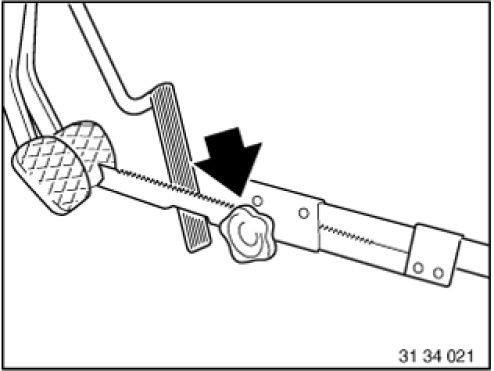
Press brake pedal down to floor and secure with pedal support.
NOTE:
The pedal support may only be released when the brake lines are reconnected.
This prevents brake fluid from emerging from the expansion tank and air from entering the system when the brake lines are opened.
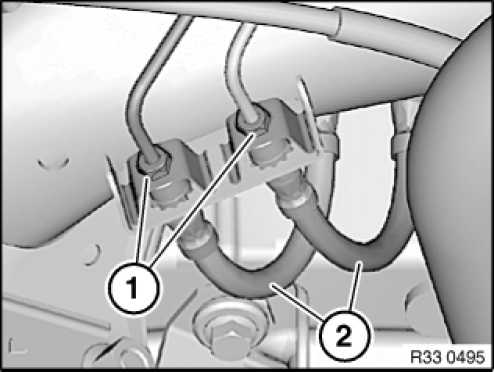
Position an oil sump underneath to catch brake fluid.
Release banjo bolts (1), counter supporting
brake hoses (2) at square head in the process.
Tightening torque 34 32 1AZ.
Disconnect brake hoses (2) and seal off with seal plugs.
Installation note:
Make sure brake hoses are laid without tension and with sufficient distance to adjoining components.

Unclip the cable for the pulse sensor and the ride height sensor/brake pad wear sensor on the side of the rear axle support.
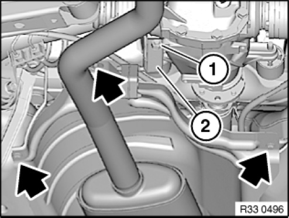
Slacken nut (1).
Turn holder (2) for exhaust system towards rear.
Release sheet metal nuts and bolts (arrows).
Place heat shield on exhaust system.
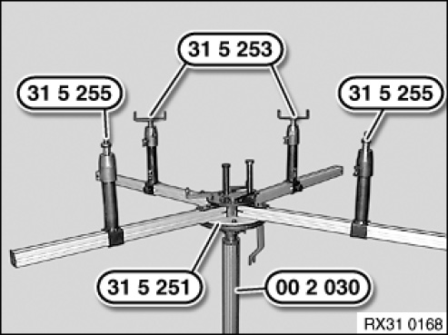
Engage special tool 31 5 251with a 2nd person helping completely on workshop jack 00 2 030.
Insert special tools 31 5 255 in telescopic supports of a profile rail pair.
Insert special tools 31 5 253 in telescopic supports of other profile rail pair.
NOTE: In a profile rail pair, two profile rails are connected to one another by gearing.
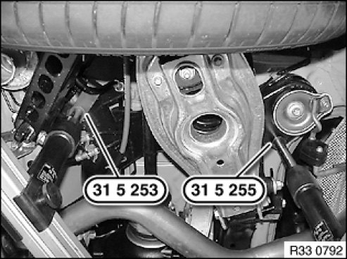
The jacking points on the left side are shown.
Align special tools 31 5 253 and 31 5 255 to rear axle support.
Support rear axle support by operating workshop jack 00 2 030.
IMPORTANT:
The centre of gravity of the rear axle must be positioned centrally over the workshop jack.
Tie down rear axle support 33 5 206 to the special tool 31 5 251 using a tensioning strap.
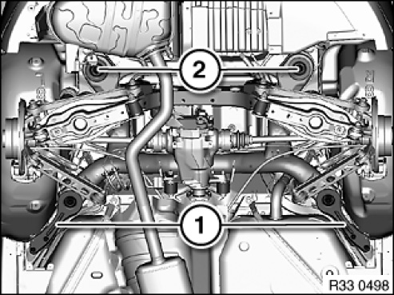
Remove compression struts (1).
Release screws (2) and swivel/remove stop plates to one side.
Tightening torque 33 33 1AZ.
Lower rear axle support.
Installation note:
Check threads for damage; if necessary, repair with Helicoil thread inserts.
First fit compression struts (1), then tighten screws (2).
After installation:
- Bleed brake system.
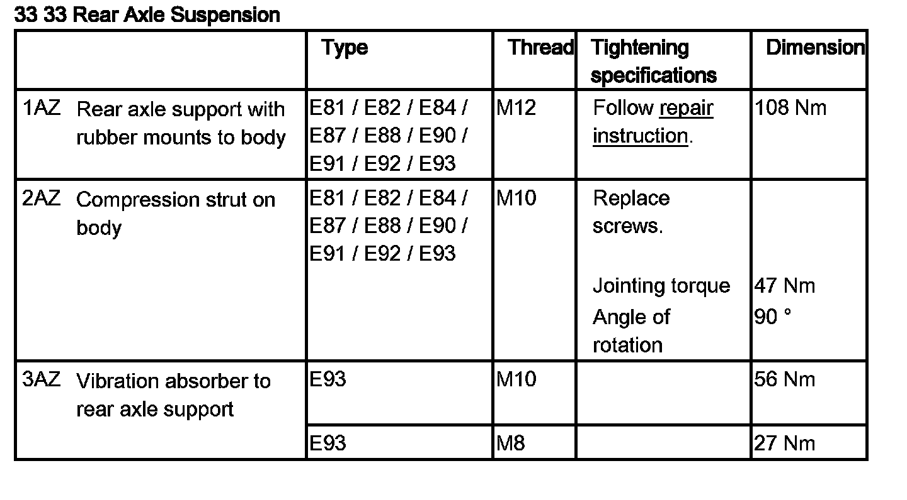
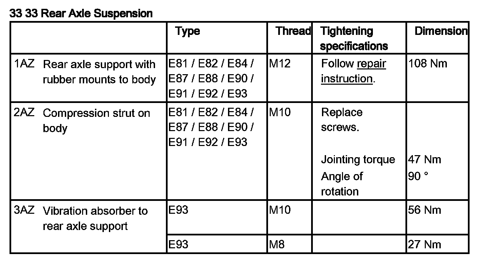
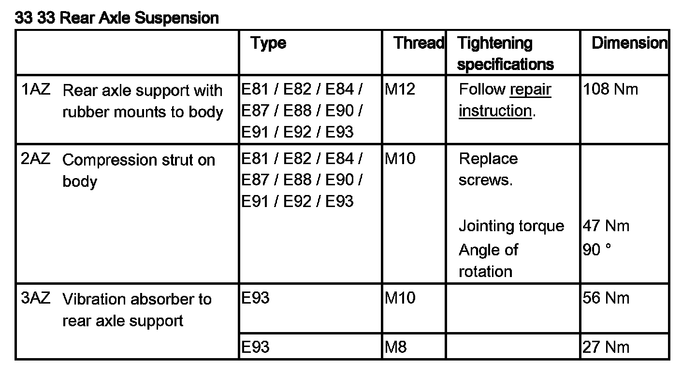
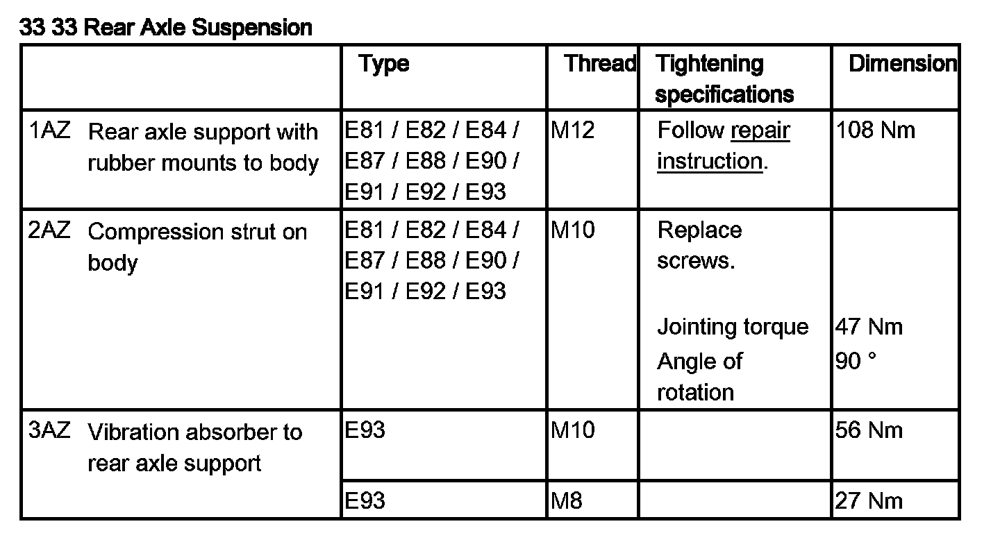
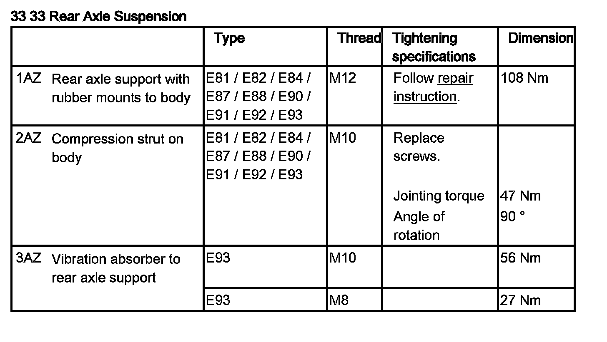
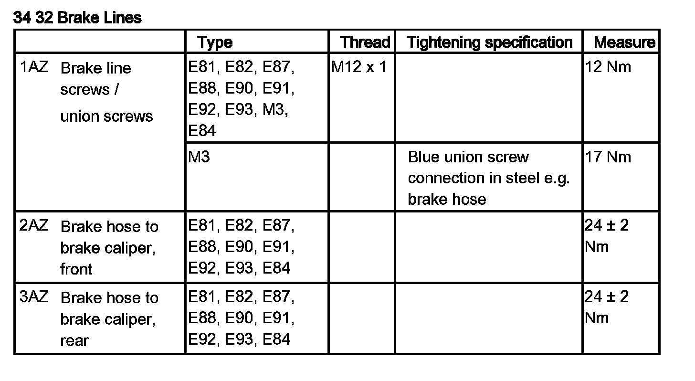
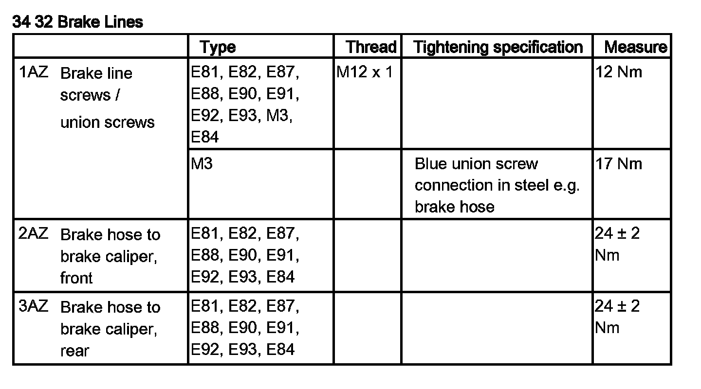
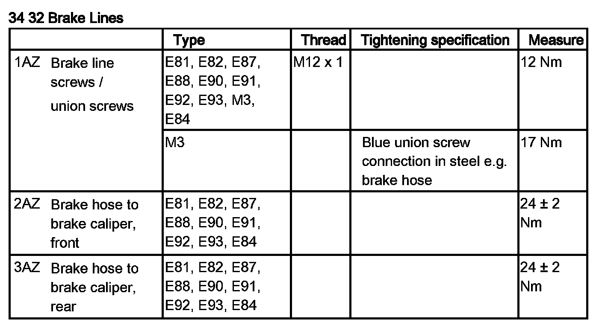
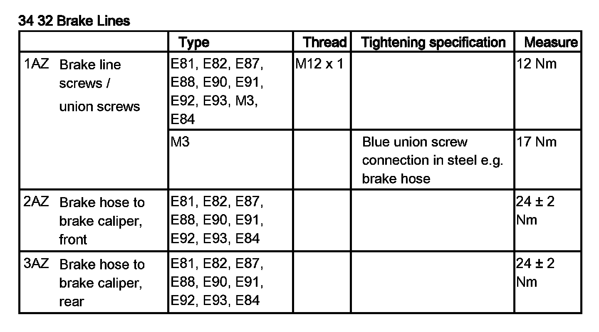
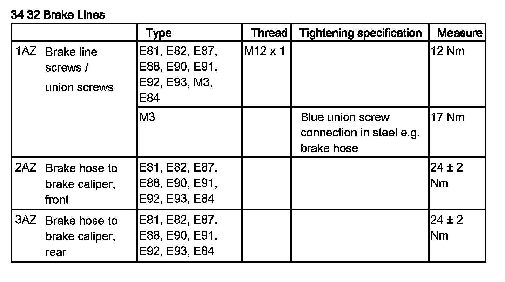
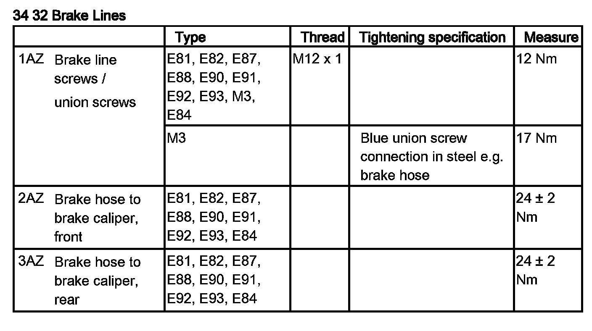